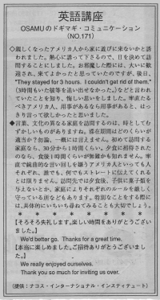

そろそろ失礼します。
We'd better go. Thankds for a great time. When you visit someone, you shouldn't stay a long time unless you are very close friends or if they urge you to stay. Otherwise, it shouldn't exceed an hour. You can make the move by saying: We'd better go. or It's getting late. We really enjoyed ourselves.
親しくなったアメリカ人から家に遊びに来ないかと誘われました 。熱心に誘って下さるので、日を決めて訪問することにしました。お邪魔した際には、大いに歓迎され、来てよかったと思っていたのですが、後日、 ¨They stayed for 3 hours. I couldn´t get rid of them.¨ （3時間もいた彼等を追い出せなかった。）などと言われていたことを知り、悔しい思いをしました。率直たるべきアメリカ人、用事があるなら用事があると、はっきり言って欲しかったと思いました。
言葉、文化の異なる家庭を訪問するのは、時としてむずかしいものがありますね。滞在期間はどのくらいが適当か？勿論、一概には言えません。初めて訪問する家庭なら、３０分から1時間くらい。夕食に招待されたのなら、食後1時間くらいが無難かもしれません。率直で婉曲的な言い回しを嫌うアメリカ人といっても人それぞれ、誰でも、何でもストレートに伝えてくれるとは限りません。訪問先では夕食後、子供に菓子類を与えないとか、家庭によりそれぞれのルールを厳しく守っている所などもあります。特別なことをする際には、具体的にいちいち尋ねてみることも大切でしょう。
そろそろ失礼します。楽しい時間をありがとうございました。
We´d better go. Thanks for a great time.
本当に楽しめました。ご招待ありがとうございました。
We really enjoyed ourselves. Thank you so much for inviting us over.

| © 1995-2013 NACOS International Institute. All Rights Reserved. |